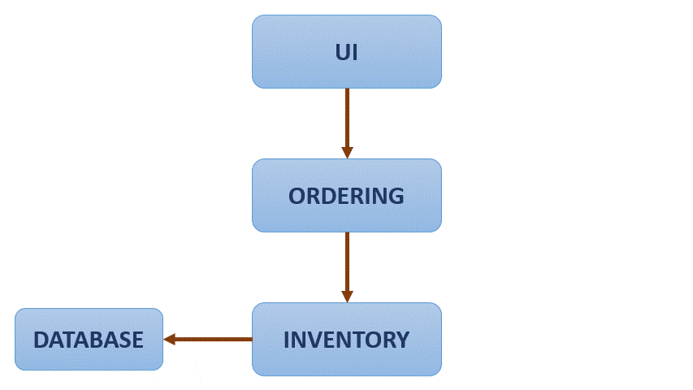

IBM Containers and Kubernetes§
Containers§
A container is an executable unit of software, in which the application code is packaged along with its libraries and dependencies in common ways, so it can be run anywhere (on-premises or in the cloud). Containers take the form of an OS virtualisation which features of the OS are used to isolate process and control the amount of CPU, memory and disk storage. In the case of Linux kernel namespaces and c-groups allow this virtualisation. Containers are small and portable. The software that boost up this technology was Docker. Nowadays, a container is a standarization of how we package and share software, so its main characteristic is portability. Container do not include a guest OS, spin ip quickly and scale horizontally. They are also platform independent and allow to scale each component of an application individually as for microservices.
Docker§
It has become the standard on containerization, is a software platform for building and running containers launched in 2013. It provides a straightforward way to build and run containers. Docker is commonly used throw Docker CLI, which provides commands as:
build ← Creates container images (requires Dockerfile)
tag ← Copy an image and give it a new name. Tags are pointers to images
images ← List all iomages, their repositories and tags, and their size
run ← Runs a container locally (usually for testing purposes)
push/pull ← Stores images or retrieves them from remotes locations
Images (Dockerfile)§
They outline all the steps necessary to build an image. A container is different from its image. Images are immutable, if you change it, it is a new image. On the other hand, a container is an instance of an image.
Images are organized in layers, one after another, containing instructions to build the image. So each docker instruction constitutes a read-only layer, and a writeable layer is added finally when an image is run as a container. Layers can be shared between images, which shaves disk space and network bandwidth.
The main instructions are:
FROM: Define base image.RUN: Execute arbitrary commands.ENV: Set environment variables.ADDandCOPY: Copy files and directories.COPYis restricted just to local resources whileADDallow remote locations.CMD: Define default command for container execution. Only one can be defined.
Example
FROM ubuntu:18.04
COPY . /app
RUN make /app
CMD python /app/app.py
Container images can be stored in your local machine, but there is a common storage to distribute named container images, called container registry, which could be public or private. Container registries could also be self-hosted or just hosted which abbreviates hosted by provider.
Images are pushed to registries and pulled from them, depending on what are
you doing. Inside a registry there are repositories, which are collections of
similar images, which are tag differently, so when an image is pulled from a
repository, the usual path is: <hostname>/<repository>:<tag> e.g.
docker.io/ubuntu:18.04. We would pull it with: docker pull <image_path>
in our machine.
Running Containers§
Let’s suppose we have the following Dockerfile:
FROM node:9.4.0-alpine
COPY app.js .
COPY package.json .
RUN npm install &&\
apk update &&\
apk upgrade
CMD node app.js
The command to create an image is: docker build -t my-app:v1 .. The
. at the end represents the build context, containing files used to
generate out image. Once the image has been built we can see out images with;
docker images. We can retag (or tag for the first time) the
images. To run an image the command docker run <image_tag>. Finally, we can
push our image with: docker push <image_tag>.
Container Orchestrations§
Over time, new applications are written and deploy, and applications take new components that run independently, to avoid this becoming an overwhelming containers swarm, container orchestrations are used.
Main tasks relying on containers orchestration tools are:
Provisioning and deployment
Availability
Scaling
Rolling updates
Health checks
Kubernetes is a container orchestration tools that is self-defined as: ‘A portable, extensible, open-source platform for managing containerized worloads and services that facilitates both declarative configuration and automation. It has a large, rapidly growing ecosystem. Kubernetes services, support, and tools are widely available’. Kubernetes is not a traditional, all-inclusive platform as a service (PaaS), does not limit the types of applications, does deploy or build applications, it does not prescribe logging, monitoring or alerting solutions and does not provide built-in middleware, databases or other services.
Architecture§
A deployment in Kubernetes is called a cluster. The control plane makes decisions about the cluster and response to events. An example would be scheduling workloads or creating new resources.
All communications in the cluster relies on Kubernetes API server. Also a key component is the etcd which is a highly available key-value store (similar to redis) that contains all cluster data, becoming the source of truth for the state of the cluster. Kubernetes scheduler assigns new created Pods to nodes and determines where workloads should run. Kubernetes controller manager runs all the controller processes, monitors the cluster state and ensures the actual and desired state matches. Finally, Cloud controller manager runs controllers that interact with underlying cloud providers, linking clusters into a cloud provider’s API.
Nodes are worker machines in Kubernetes, managed by the control plane. Kubelet communicates with the API server to ensure pods and associated containers are running and reports health to the control plane. Container runtime downloads images and runs containers being Docker and CRI-O well-known runtime. Lastly Kubernetes proxy is a network proxy that maintains network rules that allow communication to Pods (workloads of the cluster). A control loop is defined as a non-terminating loop that regulates the state of the system.
Kubernetes objects are persistent entities in Kubernetes, that define the
desired state for your workload. The Kubernetes API is used to work with them,
mainly throw kubectl CLI. The status is the current state of the cluster
and the spect constitutes the desired state. Namespaces are used to segregate
components. Each cluster may have several of them. Namespaces provide logical
separation of a cluster when many teams are using it:
Virtualization of a physical cluster
Segregate cluster by team, project, etc.
Necessary with larger numbers.
Provides a scope for object names.
Names:
Each object has a name.
Names are unique for a resource type within a namespace (e.g. a pod and a deploy can have the same name within a namespace, a pod and another pod can have the same name if they belong to different namespaces).
Labels are key/value pairs attached to objects, intended for object identification, but not unique, they organize and group objects. Selectors identify and group a set of objects, used by Kubernetes controllers to monitor resources.
Basic Objects§
Pod: Simplest unit. Represents processes runnings in a cluster. Encapsulates a container or multiple. Replicating them serves to scale horizontally:
apiVersion: v1
kind: Pod
metadata:
name: nginx
spec:
containers:
- name: nginx
image: nginx:1.7.9
ports:
- containerPort: 80
ReplicaSet: Group of identical pods that are running. Definition now contains the number of replicas and the template used to create each replica. It is not recommended to create ReplicaSets directly.
apiVersion: apps/v1
kind: ReplicaSet
metadata:
name: nginx-replicaset
labels:
app: nginx
spec:
replicas: 3
selector:
matchLabels:
app: nginx
template:
metadata:
labels:
app: nginx
spec:
containers:
- name: nginx
image: nginx:1.7.9
ports:
- containerPort: 80
Deployment: Provides updates for Pods and ReplicaSets, allow to run multiple replicas of your application and are suitable for stateless applications. Deployments are more robust and provide additional objects than ReplicaSets, even if simple specifications can look mostly the same. Deployments allow rolling updates, so replicas are there to effectively response for counting pods while deployments are responsible for orchestrating the roll out of new versions.
apiVersion: apps/v1
kind: Deployment
metadata:
name: nginx-deployment
labels:
app: nginx
spec:
replicas: 3
selector:
matchLabels:
app: nginx
template:
metadata:
labels:
app: nginx
spec:
containers:
- name: nginx
image: nginx:1.7.9
ports:
- containerPort: 80
kubectl CLI§
Key tool for working with Kubernetes, clusters and workloads running on clusters. 2 families of commands:
Imperative: Quickly create, update and delete Kubernetes objects and easy to learn. Do not provide audit trail and not really flexible.
kubectl run nginx --image nginx
There are imperative commands that use a configuration template, which specify and operation, so other members of the team can launch your containers properly.
kubectl create -f nginx.yaml
Any updates made after configuration file is created will not be automatically recorded.
Declarative: Configuration files define one or more objects, no operation
is specified, needed operations are inferred by kubectl, works better on
directories, configuration files define desired state and Kubernetes actualizes
that state.
kubectl apply -f nginx/
All files in a directory will be applied, so this is the preferred method on production systems.
Using Kubernetes§
The most relevant command is apply that, as explained above, works both
in files and directories. get and describe operate on namespaces former
listing resources (deployments) and second showing details:
kubectl get deployment --namespace kube-system
kubectl describe deployment kube-dns-amd64 --namespace kube-system
So to create a deployment:
>>> kubectl apply -f nginx.yaml
deployment.apps/nginx-deployment created
>>> kubectl get deployment
NAME READY UP-TO-DATE AVAILABLE AGE
nginx-deployment 3/3 3 3 73s
Managing Applications§
Key concepts on manage Kubernetes applications are: ReplicaSets, auto-scaling, rolling updates, ConfigMaps and Secrets and Service binding.
ReplicaSets: Are used to manage pods, ensuring the current number of pods are always up and running. They can replicate, restart or spin up pods, adding existing pods to the deployment or creating them. They ensure the maintain of desired state and supersede replica controller. With every deployment a ReplicaSet is created. One main idea of Kubernetes is independence between objects (loosely coupled yet interconnected), that is why ReplicaSets manage pods making use of labels.
After creating a deployment we can run:
>>> kubectl get replicaset
NAME DESIRED CURRENT READY AGE
hello-kubernetes-5655b5446f8 1 1 1 14m
It is highly recommended to create deployments instead of ReplicaSets:
>>> kubectl create -f deployment.yaml
deployment.apps/hello-kubernetes created
>>> kubectl get pods
NAME READY STATUS RESTARTS AGE
hello-kubernetes-5655b5446f8-2nlqb 1/1 Running 0 6s
>>> kubectl get deploy
NAME READY UP-TO-DATE AVAILABLE AGE
hello-kubernetes 1/1 1 1 12s
>>> kubectl scale deploy hello-kubernetes --replicas=3
NAME READY STATUS RESTARTS AGE
hello-kubernetes-5655b5446f8-2nlqb 1/1 Running 0 33s
hello-kubernetes-5655b5446f8-5mflw 1/1 Running 0 3s
hello-kubernetes-5655b5446f8-htb7v 1/1 Running 0 3s
We can check that ReplicaSet is working deleting one of the pods and watching how the ReplicaSet immediately recreates it.
Autoscaling: We have seen how to scale the applications using ReplicaSets, but we can use the Horizontal Pod Autoscaler (HPA) to scale up and down as needed, which can be configured based on desired CPU, memory, etc. Autoscale is used like:
>>> kubectl autoscale deploy hello-kubernetes\
>>> --min=2 --max=5 --cpu-percent=10
[16:10:46]
horizontalpodautoscaler.autoscaling/hello-kubernetes autoscaled
The parameter cpu-percent triggers the scale. The number of replicas of the
ReplicaSet is then changed. An HPA can be created as a standalone, but the
autoscale command is highly recommended.
Rolling Updates: Are a way to roll out app changes in an automated and controlled fashion throughout pods. They work with pod templates such as deployments. They allow for roll back. Steps:
Add liveness and readiness probes to your deployments. This ensures they are marked as ready appropriately.
Add a rolling update strategy to your YAML file.
apiVersion: apps/v1 kind: Deployment metadata: name: nginx-test spec: replicas: 10 selector: matchLabels: service: http=server minReadySeconds: 5 progressDeadlineSeconds: 600 strategy: type: RollingUpdate rollingUpdate: maxUnavailable: 50% maxSurge: 2
It ensures that at least 50% of the pods are always available. Once the image is updated in our docker-image repository, we should run:
>>> kubectl set image deployments/hello-kubernetes\ >>> hello-kubernetes=upkar/hello-kubernetes:2.0 deployment.extensions/hello-kubernetes image updated >>> kubectl rollout status deployment/hello-kubernetes deployment "hello-kubernetes" successfully rolled out
This means that the deployment has been correctly updated. With the command
rollout undoapplied to the same deployment we would undo the update.
ConfigMaps and Secrets: Are the way to pass variables to our applications. Environment variables should not be hardcoded. ConfigMaps and Secrets just differentiate in former contains general (public) environment variables while second contains sensitive variables (as API keys). They are used to provide configuration for deployments, are reusable across them and can be created:
Using string literals
Using and existing “key”=”value” file
Providing a ConfigMap YAML descriptor file. First and second method could help to create this YAML.
They can be reference from a pod / deployment just as environment variables, or
mounting as a volume. The easiest way to pass a ConfigMap is just using the
create configmap as follows:
>>> kubectl create configmap my-config\
>>> --from-literal=MESSAGE="hello from first ConfigMap"
configmap/my-config created
Then you add it to the env section of the YAML file of your image:
...
env:
- name: MESSAGE
valueFrom:
configMapKeyRef:
- name: my-config
key: MESSAGE
There are 2 key commands to list and explore available ConfigMaps:
>>> kubectl get configmaps
NAME DATA AGE
my-config 1 5m42s
>>> kubectl describe connfigmap my-config
Name: my-config
Namespace: default
Labels: <none>
Annotations: <none>
Data
====
MESSAGE:
----
hello from first ConfigMap
Events: <none>
A better way to create a ConfigMap is using a file, where variables are defined
as <key>=<value> pairs. Then you just pass the option
--from-file=<your_file_name> to the kubectl create configmap command.
Secrets work mostly as ConfigMaps but the values of the stored keys are not
printed out by kubectl commands. So we can use the same methods described
above (options --from-literal and --from-file) but just with
kubectl create secret generic command. There is also the option to mount
secrets as a volume as follows:
spec:
containers:
- name: hello-kubernetes
image: upkar/myapp:latest
ports:
- containerPort: 8080
volumeMounts:
- name: api-creds
mountPath: "/etc/api"
readOnly=true
volumes:
- name: api-creds
secret:
secretName: api-creds
IBM provides a bunch of services (most related to NLP) that can be bind to our application. When a service is bind to a cluster deployment the credentials are available as a mounted Secret volume.
Kubernetes Ecosystem§
As stated on its own description Kubernetes is surrounded by a large and rapidly growing ecosystem. Kubernetes is not an all-inclusive platform as a service, providing a more flexible model rather than a more opinionated one. The ecosystem provides many services that Kubernetes does not, we have already seen many (firsts provided by Docker, the containerization tool):
Building a container images
Storing images in a container registry
Logging and monitoring
Continous Integration and Delivery (CI/CD)
The Cloud Native Computing Foundation (CNCF) hosts Kubernetes and provides resources to better understand the ecosystem.
Red Hat OpenShift is an hybrid cloud (can be run on premises or in public
or private clouds), enterprise Kubernetes (is the underlying technology)
application platform (provides additional tools for applications). It is built
on Kubernetes, provides several services using it (Automated Ops, Over-the-air
updates, Monitoring, Registry, Networking, Router, KubeVirt, OLM and HELM) and
offers Platform, Application and Developer services to client deployments. A
key concept is Origin Kubernetes Distribution (OKD) which is a Kubernetes
distribution embedded in OpenShift (analogy: Kubernetes (Linux) kernel and OKD
(Arch) distribution. It adds developer operations-centric tooling on top of
Kubernetes and its Open Source. Red Hat packages OKD with software, resources
and official support to create Red Hat OpenShift Container platform which is
the commercial product (OpenShift is the product and Kubernetes is an open
source project). OpenShift has its own CLI (oc) which add commands to
kubectl. Additionally it has a Web UI and incorporates the Deployment
Config objects based on old kubernetes object ReplicaSet Controller instead of
ReplicaSet, they include the capability to add triggers associated to certain
events. Open Shift is an opinionated platform, so it has prescribed ways of
deploy and manage your applications, reducing Kubernetes flexibility to gain
efficiency.
Cloud native development calls for automation and CI/CD is one example. It automates build, test, merge, releasing to a repository and finally deploy. For OpenShift a Build is the process of transforming inputs into a resultant object (source code in a repo to a container image). A BuildConfig is the blueprint of a Build, defining the process for a build to follow. Some Builds are:
Docker: Requires a repository with a Dockerfile and necessary artifacts, invokes the
docker buildcommand and pushes the image to the internal registry.Source-to-Image (S2I): Is a tool for building reproducible container images that injects application source into a container image to produce a ready-to-run image, eliminating the necessity to write a Dockerfile and including predefined builder images.
Custom build: Is the more advanced strategy. It requires to define a builder image that is used for the build process, so Custom builder images are Docker images containing the logic needed to transform inputs into the expected outputs.
An example of BuildConfig would be:
kind: BuildConfig
apiVersion: build.openshift.io/v1
metadata:
name: example
spec:
output:
to:
kind: imageStreamTag
name: 'example:latest'
strategy:
type: Source
sourceStrategy:
from:
kind: imageStreamTag
name: 'nodejs:10-5CL'
source:
type: Git
git:
url: 'https://github.com/organization/repo'
contextDir: /
triggers:
- type: Generic
generic:
secretReference:
name: example-generic-webhook-secret
-type: GitHub
github:
secretReference:
name: example-github-webhook-secret
-type: imageChange
imageChange:
runspolicy: Serial
In it, we must highlight:
Output: Defines what build will produce
Strategy: Defines the strategy that build will use
Source: Defines the inputs that build needs.
Triggers: Defines the events that can cause build to run.
Special attention is deserved by Triggers, that can be: webhooks (both a request sent to an OpenShift Container Platform API endpoint or GitHub generic webhooks), Image changes (new version available or similar) and Configuration changes (when a new BuildConfig is created).
ImageStream is the way to represent images in OpenShift, which consist of an abstraction for referencing images, do not contain image data just pointers to images digests (ids) so deployments referencing certain ImageStream will not update image even if it a new one is pushed with the same tag, it is necessary make the ImageStream to point to the new image for deployments to update. Finally, ImageStreams also allow to store source images in internal or external registries or other ImageStreams.
Operators are used to automate tasks within a cluster. In addition to
Builds and Pods there are also Custom Resource Definitions (CRDs) which make
the Kubernetes API more modular and flexible. They can be installed in clusters
so they are cluster-specific and once one is installed its objects can be
accessed normally using kubectl. CRDs are useful to store and retrieve
data on Kubernetes API, but they do not change the actual state of the
cluster, for this purpose Custom Controllers are needed. Controllers are
loops that monitor and reconcile the state of a cluster, so custom controllers
do the same for custom resources. Combination of custom resources and
controllers gives a true declarative API, and this combination is called the
Operator Pattern.
An Operator is then a way to package, deploy and manage a Kubernetes native application. Human operators have deep knowledge of the system they oversee knowing how to deploy services, how they services should behave and what to do if something goes wrong. Software operators capture and automate this logic in a way that can be deployed to a cluster.
In practice, when creating an application a CRD is created for the application, having a controller for that CRD, operator logic determines how to reconcile actual and desired states. So if one instance of the CRD is created, operator know the additional resources and requirements that need to be created.
In OpenShift exists the OperatorHub where operators are offered and can be installed with a simple click. Operators can be grouped in 3 families: Red Hat (which are packaged by Red Hat), Certified (which are operators from independent software vendors), Community (which are operators created by the open-source community but not officially supported by Red Hat) and finally Custom (which are defined by the user).
Microservices is a cornerstone of Cloud native applications, being an architectural approach that requires each single application being composed of many loosely coupled and independently deployable services that communicate throw a well defined API. This architecture has many benefits, as updates and developments are easier, but also bring up new challenges as traffic encryption between services, canary deployments and A/B testing are required to expose different version and see what users prefers, communication also allows cascading failures if one of the services fall. Service mesh is a dedicated layer for making service-to-service communication fast, secure and reliable. Provides traffic management, security and observability, being the most commonly used Istio.
Istio is platform independent but it is commonly used on Kubernetes applications. It is composed by 4 modules:
Connect: Intelligently control flow of traffic and API calls between services, conduct a range of tests and upgrade gradually with red/black deployments. Enables canary deployments, A/B testing, etc.
Secure: Automatically secure your services through managed authentication, authorization and encryption of communication between services.
Control: Apply policies and ensure that they are enforced, and that resources are fairly distributed among containers.
Observe: See what is happening with rich automatic tracing, monitoring and logging of all your services.
One simple application of Istio can is the flow redirection:
{kind=link}
As it is observed, the application flow if redirected gradually from one service to another, avoiding a hard change or reset. With Istio traffic between services can also be encrypted, and strict policies can be defined setting what services can communicate with one another. Also you can see metrics as number of requests between services and response times.